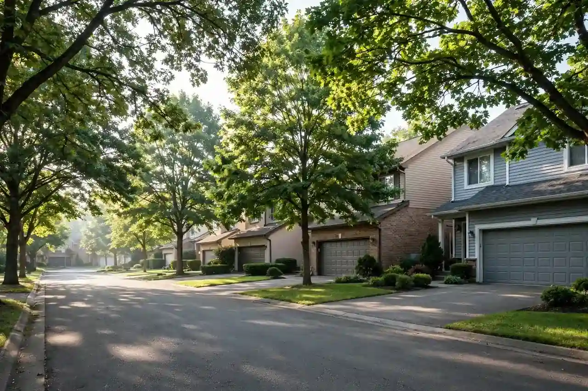

Your local team · Cypress Park
Garage Doors in Cypress Park, IL for 2000s Pulte-Built Homes
Cypress Park is a Pulte Homes subdivision: homes built between 2006 and 2010, with attached two- to three-car garages facing the street. Doors and openers from that build wave are now fifteen to twenty years old, which is when opener controls, sensors, rollers, and seals start to need attention even though the doors themselves may look sound. Milwaukee Garage Doors Inc handles repair, installation, springs, openers, panels, off-track work, and maintenance in Cypress Park. Call (224) 842-7761. The business is open 24 hours, every day.
Local knowledge
Cypress Park: Pulte Homes, 2006-2010, and the First Replacement Cycle
Cypress Park was built by Pulte Homes between 2006 and 2010, north of 29th Street and east of Green Bay Road. The era is settled from the sales record: individual sales from 2006, 2007, 2008, and 2010 support the range, and the average year built sits between 2006 and 2009 across snapshots. Homes are 2,140 to 3,341 square feet, with later snapshots showing 2,416 to 3,438 square feet, on quarter-acre lots. The garage pattern is attached, two- to three-car, and garage-forward, with doors and openers now fifteen to twenty years old. That age is the story of this page: hardware entering its first replacement cycle, with opener, sensor, roller, and seal work coming before full door replacement in most cases.

Services available in Cypress Park
Garage Door Services Available Across Cypress Park
Cypress Park doors are younger than those in the 1990s subdivisions, so the balance of work is different: more opener, sensor, and hardware attention, and fewer doors at the end of their life. The eight services below cover the full range, and each note ties the service to what a 2006-2010 Pulte-built home in Cypress Park is likely to have.
01
Garage Door Repair
Cypress Park doors date to 2006-2010, so repair work here often involves the first round of hardware wear rather than end-of-life failure. First-round wear on a 2006 to 2010 Pulte stock is traced through the springs, cables, rollers, tracks, and opener on the door as found, since even well-kept doors show fatigue after fifteen to twenty years.
View service 02Garage Door Installation & Replacement
With homes built by Pulte Homes between 2006 and 2010, most Cypress Park doors are still within their first replacement cycle. Most doors here are still within a first replacement cycle, so the opening is measured as built, including header, jambs, and clearances, before a new door is considered. Panel style, insulation, and opener pairing follow from the opening and the garage-forward layout, not from an assumed standard size.
View service 03Garage Door Spring Replacement
Springs in Cypress Park have carried their doors for fifteen to twenty years, which is enough time for fatigue to show even on well-kept doors. Torsion and extension springs are identified on the individual door, and fatigue is judged by inspection after fifteen to twenty years of use. A broken spring makes the door hard to lift by hand, and the opener is left off until the springs have been checked.
View service 04Garage Door Opener Repair & Installation
Openers from the 2006-2010 build wave in Cypress Park are at the age where controls, sensors, and drive parts commonly need attention. They are checked part by part, since a humming or reversing opener may need a sensor, gear, limit, or control fix rather than a new unit. The safety sensors and auto-reverse are checked during the same visit, whatever part needed attention.
View service 05Garage Door Panel Replacement
Cypress Park homes run to 3,341 square feet in the main snapshot, and their street-facing attached doors make a damaged section hard to ignore. On garage-forward attached doors, damage confined to one panel suits single-section replacement where the remaining sections, hinges, and tracks are still sound. The replacement section must match the door in size and profile, which matters on a street-facing door as well as in how it travels.
View service 06Garage Door Off-Track, Cable & Roller Repair
Attached two- to three-car doors in Cypress Park depend on long, well-aligned tracks, so roller and cable wear shows up as uneven or noisy travel. The cause is traced through cables, rollers, and tracks as one system. The travel path is run through in full, from the tracks to the spring balance, before the door returns to regular use.
View service 07Garage Door Maintenance & Tune-Up
For fifteen- to twenty-year-old doors in Cypress Park, a regular check is how early wear in rollers, hinges, seals, and safety features is found. A tune-up covers hardware condition, balance, seal condition, and the safety sensors and auto-reverse. That check catches the first round of wear before it becomes a failure.
View service 08Emergency Garage Door Repair
A garage door stuck open in Cypress Park leaves a street-facing attached garage exposed, and the phone line is the way to reach help at any hour. The phone line is open 24 hours, every day: (224) 842-7761. A street-facing door stuck open is left where it is, and the call describes the door’s position and whether it moves at all.
View serviceHow the work is approached
How We Run Garage Door Work in Cypress Park
Work in Cypress Park follows the same checking sequence as anywhere else in Zion, applied to homes built between 2006 and 2010. The difference is emphasis: openers and controls of this era, seals and rollers with fifteen to twenty years of use, and doors that usually have life left in them. The notes below describe the checks, not promises about timing or stock.
Measure the opening, check the frame
Cypress Park openings are from the 2006-2010 build wave, and a replacement door must fit the opening as it stands. The opening is measured and the header and jambs checked before a door is ordered, so the new door runs true.
Opener controls and safety features
Remotes, keypads, wall controls, and sensors all age with the opener. The controls are checked alongside the motor and drive, and the photoelectric sensors and auto-reverse are tested as part of any opener work.
Rollers, hinges, and track alignment
Fifteen to twenty years of daily cycles wear rollers and hinges and can let a track drift. New noise or jerky travel usually traces to this hardware, and the full travel path is checked rather than a single noisy roller.
Seals after fifteen to twenty winters
Bottom and perimeter seals harden with age and cold. A seal that no longer meets the floor lets in cold air and meltwater, and in winter a door can freeze to the slab. A frozen door is never forced with the opener.
Springs still carry the weight
Even on younger doors, springs work under tension and carry the door's weight. A broken spring makes the door heavy and hard to lift, and spring work is left to a technician. If a spring snaps, stop using the door.
Phase 2 land is not housing stock
A Phase 2 land offering in Cypress Park, 32 lots on 15.82 acres marketed in June 2026, is unbuilt land. The garage door topics on this page concern the built homes from 2006-2010, not land that has no doors yet.
Common local problems
Common Garage Door Problems in Cypress Park
An opener that ignores remotes or keypads
Reversing before the door closes
Rollers and hinges turning noisy with use
Seals hardening after many winters
Warning signs
Signs Your Cypress Park Garage Door Needs Attention
The opener hums but the door does not move
A humming opener with a still door can mean a worn gear, a drive fault, or a broken spring holding the door down. Do not keep running the opener against a door that will not move; the fault needs a check of the opener, springs, and cables together.
The door reverses when the path looks clear
Safety sensors at the base of the tracks can be dirty, misaligned, or blocked, and a drifting force setting can cause the same symptom. Reversing is a safety behaviour, and it should be checked rather than worked around.
New grinding or rattling as the door travels
Rollers, hinges, and tracks wear with use, and fifteen to twenty years is enough for that wear to become audible. The noise points to the hardware; the hardware is what needs attention.
The door moves unevenly or binds partway
A cable, roller, or track fault can make a door travel crooked or stop partway. An uneven door can leave its track, so it should not be forced. Cables, drums, rollers, and track alignment are checked together.
Cold air or water coming in around the door
Seals harden with age and cold, and gaps at the bottom or sides let in cold air and meltwater. In winter, water at the threshold can refreeze and stick the door to the floor.
Area context
What Shapes Garage Door Work in Cypress Park
Cypress Park has the clearest build record in this group: a named builder, a resolved build range, and sales evidence to support it. The notes below use that record, plus the garage pattern and the unbuilt Phase 2 land, to explain what garage door work here usually involves.
Built 2006-2010 by Pulte Homes
Cypress Park was built by Pulte Homes between 2006 and 2010. Sales from 2006, 2007, 2008, and 2010 support the range, and the average year built is 2006-2009 across snapshots. A phrase placing the build in the mid to late 2010s contradicts the sales record and is not used here.
Homes of 2,140 to 3,341 square feet
The main snapshot gives homes of 2,140 to 3,341 square feet, with later snapshots showing 2,416 to 3,438 square feet, on quarter-acre lots. Larger homes here generally mean wider attached garage doors with more hardware to keep aligned.
Attached, garage-forward, two- to three-car
The garage pattern is attached, two- to three-car, and garage-forward. Doors and openers are now fifteen to twenty years old, which is the age when controls and hardware first need sustained attention.
North of 29th Street, east of Green Bay Road
Cypress Park sits north of 29th Street and east of Green Bay Road, in western Zion, within the West Zion sector. The nearby areas linked below include the other western subdivisions with their own pages.
Association fee reports vary; rules unevidenced
Fee reports for the homeowners association vary widely by snapshot, and no current figure is stated here. Exterior-modification rules, if any, were not evidenced, so owners should check their own association documents before changing a door.
Phase 2: 32 lots of unbuilt land
A Phase 2 offering of 32 lots on 15.82 acres, marketed in June 2026, is unbuilt land bounded by Phillip Drive, Grace Avenue, Cypress Drive, Harmony Drive, and Mark Avenue. It is not housing stock, and no garage door claims are made for it.
Cypress Park service coverage
Garage Door Help in Cypress Park, Zion, IL
This page covers garage door work for the built homes of Cypress Park in western Zion. The chips name the location anchors and sector parent from the research. Milwaukee Garage Doors Inc is based at 2016 Horizon Ct, Zion, IL 60099, and is open 24 hours, every day.
29th StreetGreen Bay RoadWest ZionZion, IL 60099
Milwaukee Garage Doors Inc2016 Horizon Ct, Zion, IL 60099, United States
Common work
Garage Door Work Common in Cypress Park
Opener, sensor, and control work
A common pattern for doors of this age is opener trouble: remotes and keypads failing, sensors misaligning, and travel limits drifting. Opener work here checks the motor, drive, controls, sensors, and auto-reverse together.
Roller, hinge, and track attention
Fifteen to twenty years of cycles wear the moving hardware. The general work is roller and hinge attention and track alignment, addressing noise and uneven travel before a roller seizes or the door leaves its track.
Seal renewal and section checks
Seals harden over many winters, and sections take knocks from vehicles and weather. Seal renewal and single-section replacement, where damage is confined to one panel, are the usual general topics for doors of this era.
Notes from local customers
What Customers Say
The crew was proficient and competent, and they made my garage seem better than before.
Premium components were used to rebuild my garage door for reasonably low running cost.
I had a thorough safety check on my garage door, the technician was very detailed.
Plan for the season
How Cypress Park Seasons Affect Your Garage Door
Spring: test the safety features
Spring is a practical time to test the photoelectric sensors and auto-reverse and to look over the seals after winter. Cold weather stiffens springs and hardens seals, and a spring check catches that wear.
Summer: controls and noise
Summer use is heavy, and worn rollers show up as noise. Remotes, keypads, and opener limits can also be checked while the weather is warm and the door is in daily use.
Fall: prepare for cold weather
Before the cold arrives, the bottom seal, spring and cable condition, and sensor alignment are worth a look. A door that is sound in fall is less likely to stick or fail in winter.
Winter: do not force a stuck door
Meltwater can refreeze at the threshold and bond a door to the floor. Never force a frozen door with the opener, and if a spring snaps, stop using the door and call (224) 842-7761.
Nearby service areas
Nearby Zion Areas
The areas below are other Zion areas with their own pages, including the West Zion sector parent. Cypress Park shares the western-subdivision pattern with them, though each area has its own build era and evidence.
Before you hire
Questions to Ask a Garage Door Company in Cypress Park
Do you test the safety reverse and sensors on every visit?
How do you assess an opener that is fifteen to twenty years old?
How do I check whether the City of Zion requires a permit for this work?
What details about the door help most when I call?
Should I check my association documents before changing the door?
Trust and compliance
Codes and Safety in Zion
Adopted codes in Zion
Zion has adopted the 2021 International Building Code and 2021 International Residential Code, effective January 1, 2025, with local amendments.
State licence position
Illinois does not issue a statewide licence covering garage-door work; the only general building-trade contractor licences issued statewide are for roofing and plumbing. Whether City of Zion contractor registration applies to garage-door contractors was not confirmed — ask the City of Zion Building Department.
Safety sensors and auto-reverse
Federal rules (16 CFR Part 1211, UL 325) require residential automatic garage door operators to have entrapment protection: an inherent reversal system plus a secondary entrapment protection device (such as photoelectric sensors or an edge sensor) or a constant-contact control. Test sensors and auto-reverse regularly.
Battery backup
No Illinois battery-backup mandate for garage door openers was found. Battery backup is an opener feature to discuss, not a requirement stated here.
Permits: ask the City first
Whether a City of Zion permit is required for garage-door work, and any fee, was not confirmed on a City source. Contact the City of Zion Building Department, 2828 Sheridan Road, (847) 746-4018, before work begins.
Springs and cables need care
Springs and cables carry high tension. Leave spring and cable work to a technician, and do not remove bottom brackets or fasteners holding spring and cable parts.
Older openings vary
Older garages can have openings that differ from current standard sizes. Measure the opening, headroom and side room before ordering a door so the replacement fits the opening as built.
When to stop using a door
If a spring breaks, a cable frays or the door drops unevenly, stop using the door and keep people clear of it. Call (224) 842-7761 and describe what the door is doing.
Cypress Park homes were built by Pulte Homes between 2006 and 2010. The range is supported by sales from 2006, 2007, 2008, and 2010, with an average year built of 2006-2009 across snapshots. Doors and openers from that wave are now fifteen to twenty years old.
Fee reports for the association vary widely by snapshot, and no current figure is stated here. Exterior-modification rules, if any, were not evidenced in the records read, so owners should check their own association documents before changing a door.
Phase 2 is a land offering of 32 lots on 15.82 acres, marketed in June 2026. It is unbuilt land, not housing stock, and this page makes no garage door claims for it.
Whether a City of Zion permit is required for garage-door work, and any fee, was not confirmed on a City source. Contact the City of Zion Building Department, 2828 Sheridan Road, (847) 746-4018, before work begins.
Call (224) 842-7761. The business is open 24 hours, every day, and is based at 2016 Horizon Ct, Zion, IL 60099. Phone is the way to reach us; describe what the door is doing when you call.
Need garage door help?
Need Garage Door Help in Cypress Park?
If your Cypress Park garage door is reversing, ignoring remotes, running noisy, or sticking in cold weather, call and describe what it is doing. Doors and openers from 2006-2010 are at the age when controls, sensors, and hardware first need attention. Milwaukee Garage Doors Inc is open 24 hours, every day, at (224) 842-7761.
Start with the basics
Call Milwaukee Garage Doors Inc
Call (224) 842-7761 for garage door repair, installation, springs, openers, and maintenance in Cypress Park and across Zion. Milwaukee Garage Doors Inc is open 24 hours, every day. Tell us what the door is doing, and whether it is stuck open, stuck closed, off its track, or making a new noise.
CALL(224) 842-7761
HOURSOpen 24 hours, every day